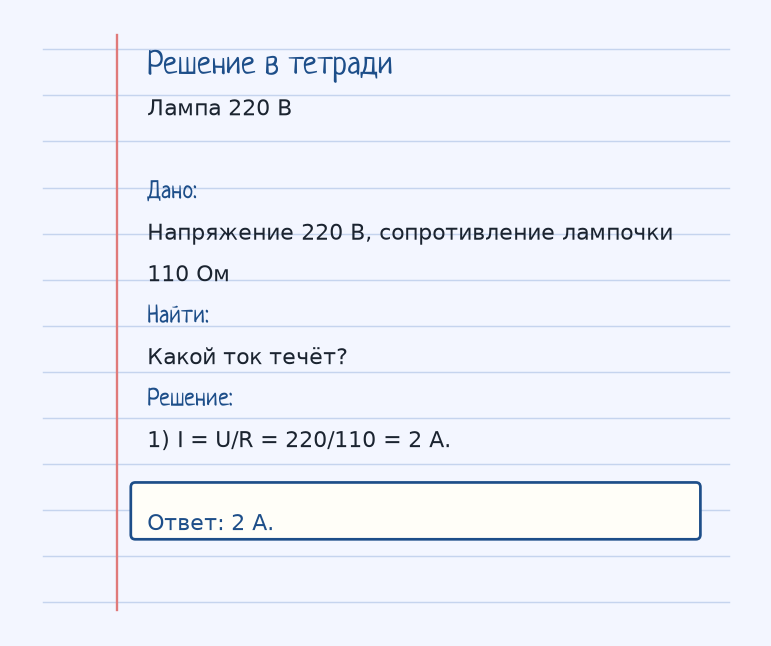
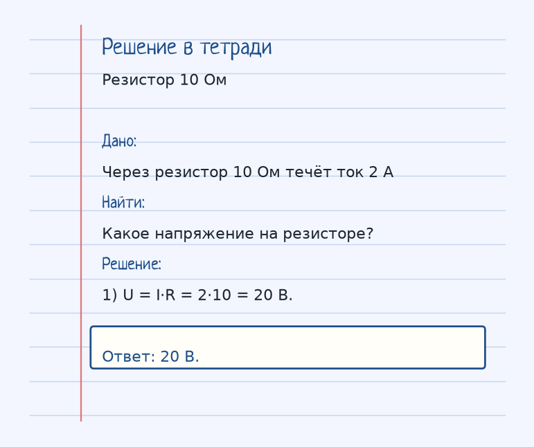

Тема «Закон Ома для участка цепи»: физический смысл, единицы величин, типичные ошибки и два разобранных примера.
Схема к условию.
Физический смысл
Сила тока в проводнике прямо пропорциональна напряжению на его концах и обратно пропорциональна сопротивлению. Это главный закон для всех расчетов цепей.
Закон Ома для участка: I = U/R. Ток тем больше, чем выше напряжение на концах, и тем меньше, чем больше сопротивление. Это главная формула расчёта цепей в школьном курсе.
Из неё сразу читаются две соседние записи: U = I·R и R = U/I. Резистор 10 Ом при токе 2 А сидит под напряжением 20 В. Лампа 110 Ом в сети 220 В берёт ток 220/110 = 2 А.
Шарик в трубе с песком: сильнее толкаешь — быстрее едет, уже труба или больше песка — медленнее. Песок здесь и есть сопротивление.
Формула и единицы
I = U / R
R — сопротивление (Ом).
I = U/R. R в омах, U в вольтах, I в амперах.
Пояснение
Ты толкаешь шарик по трубе. Чем сильнее толкаешь (напряжение), тем быстрее он едет (ток). Чем уже труба или больше в ней песка (сопротивление), тем медленнее.
Шарик в трубе: сильнее толчок (напряжение) — быстрее движение (ток). Уже труба или больше песка (сопротивление) — медленнее.
Типичные ошибки
Не переворачивай дробь. Больше R при том же U — меньше ток, а не больше.
Разобранные примеры. Решение каждого открывается отдельно.
Разбор 1
Лампа 220 В
Напряжение 220 В, сопротивление лампочки 110 Ом. Какой ток течёт?
На схеме только условие.
Порядок записи: данные, единицы СИ, искомая величина, ход решения, ответ.
Дано. Напряжение 220 В, сопротивление лампочки 110 Ом
В СИ.
Найти. Какой ток течёт?
Решение.
I = U/R = 220/110 = 2 А.
2 А.

Разбор 2
Резистор 10 Ом
Через резистор 10 Ом течёт ток 2 А. Какое напряжение на резисторе?
На схеме только условие.
Порядок записи: данные, единицы СИ, искомая величина, ход решения, ответ.
Дано. Через резистор 10 Ом течёт ток 2 А
В СИ.
Найти. Какое напряжение на резисторе?
Решение.
U = I·R = 2·10 = 20 В.
20 В.

Разбор 3
12 В и 6 Ом
Напряжение на участке 12 В, сопротивление 6 Ом. Найдите ток.
На схеме только условие.
Порядок записи: данные, единицы СИ, искомая величина, ход решения, ответ.
Дано. U = 12 В, R = 6 Ом
В СИ.
I = U/R.
Найти. I
Решение.
I = 12/6 = 2 А.
2 А.
Разбор 4
Ток 0,4 А
Через резистор 25 Ом течёт ток 0,4 А. Найдите напряжение.
На схеме только условие.
Порядок записи: данные, единицы СИ, искомая величина, ход решения, ответ.
Дано. I = 0,4 А, R = 25 Ом
В СИ.
U = I R.
Найти. U
Решение.
U = 0,4·25 = 10 В.
10 В.
Разбор 5
Сопротивление
U = 9 В, I = 0,3 А. Найдите R.
На схеме только условие.
Порядок записи: данные, единицы СИ, искомая величина, ход решения, ответ.
Дано. U = 9 В, I = 0,3 А
В СИ.
R = U/I.
Найти. R
Решение.
R = 9/0,3 = 30 Ом.
30 Ом.
Разбор 6
Больше R
Напряжение оставили прежним, сопротивление увеличили. Как изменился ток?
На схеме только условие.
Порядок записи: данные, единицы СИ, искомая величина, ход решения, ответ.
Дано. U = const, R выросло
В СИ.
I = U/R.
Найти. I
Решение.
Ток уменьшился.
Уменьшился.
Разбор 7
Формула
Запишите закон Ома для участка цепи.
На схеме только условие.
Порядок записи: данные, единицы СИ, искомая величина, ход решения, ответ.